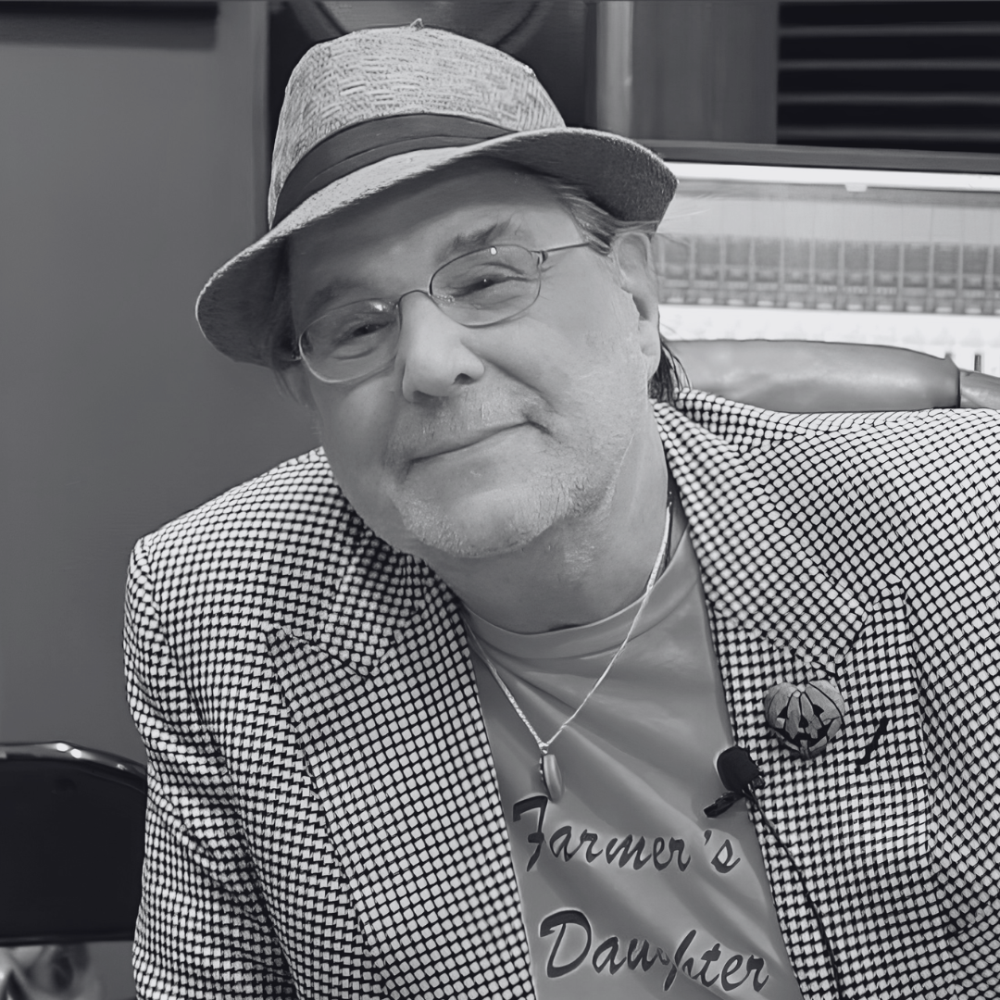

"Imaginative and engaging. His music is characterised by turns with a lyrical sensibility and dramatic energy." Conrad Pope Composer, orchestrator, conductor / John Williams, Hans Zimmer
"Imaginative and engaging. His music is characterised by turns with a lyrical sensibility and dramatic energy." Conrad Pope Composer, orchestrator, conductor / John Williams, Hans Zimmer

"Conor's enthusiasm and passion for great art is only matched by his ability to produce it." Rory Friers Composer, guitarist at And So I Watch You From Afar

"Ready to take over Hollywood." Christopher Young Composer / Spider-Man 3, Hellraiser, Ghost Rider
"His work and his thought consistently demonstrates openness, curiosity and innovation." Andy Hill Director of Studies at the Film Scoring Academy of Europe

"His work ethic offers a professional, committed and tailored style to storytelling." Sean Mullan Filmmaker, producer

"An extremely talented composer who delivers on time, even when the pressure of a deadline looms." Andrew Tully Producer at Fine Point Films


Conor O'Boyle is a Northern Irish composer, orchestrator and producer whose work moves between concert music, screen composition and contemporary production.
His writing is rooted in strong melodic instinct, dramatic shape and a close attention to atmosphere. Across projects including Fantasia, Murder In The Badlands, Autumn Impressions and Welcome to Platonic Shapes, Conor brings together orchestral colour, emotional clarity and a collaborative approach to storytelling.
Based in Northern Ireland, Conor continues to develop a body of work across film, media and independent music projects, with a focus on creating music that supports the image, serves the story and leaves a lasting emotional impression.